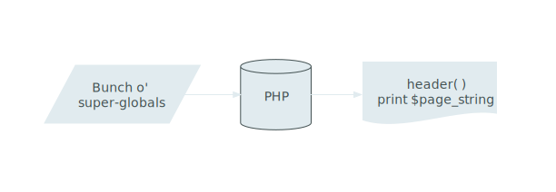
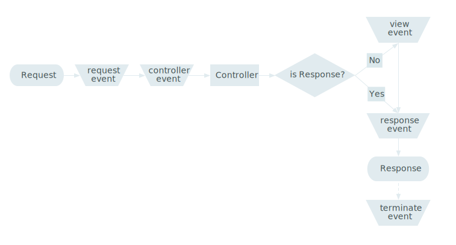

Welcome
Outline
Process
Drupal 7
PHP 4 application
Drupal 8
PHP 5.4* application
* maybeWhat does that mean?
The end of
"Not Invented Here"
We have
catching up to do
Playing nice with others
- Namespacing
- Interfaces
- Annotations
- Plugins
- YAML
Namespacing
- PSR-0
- A fully-qualified namespace and class must have the following structure:
\<Vendor Name>\(<Namespace>)*\<Class Name> - Allows standard autoloading
- See https://github.com/php-fig/fig-standards
/**
* @file
* Definition of Drupal\domain\Plugin\Core\Entity\Domain.
*/
namespace Drupal\domain\Plugin\Core\Entity;
use Drupal\domain\DomainInterface;
use Drupal\Core\Entity\ContentEntityInterface;
use Drupal\Core\Entity\Entity;
use Drupal\Core\Entity\Annotation\EntityType;
use Drupal\Core\Entity\EntityStorageControllerInterface;
use Drupal\Core\Annotation\Translation;
use Guzzle\Http\Exception\HttpExceptionInterfaces
- Separate design from implementation
- Allow objects to be mocked (testable)
- Allow implementations to be swapped
- Separate your library code from your Drupal code
/**
* @file
* Definition of Drupal\domain\DomainInterface.
*/
namespace Drupal\domain;
use Drupal\Core\Entity\ContentEntityInterface;
interface DomainInterface extends ContentEntityInterface {
public function validate();
public function checkResponse();
public function isActive();
public function isDefault();
}Annotations
- Docblocks as class definitions
- Self-documenting
- Replaces custom
hook_*_info()
namespace Drupal\domain\Plugin\Block;
use Drupal\block\BlockBase;
use Drupal\Component\Annotation\Plugin;
use Drupal\Core\Annotation\Translation;
/**
* Provides a server information block for a domain request.
*
* @Plugin(
* id = "domain_server_block",
* admin_label = @Translation("Domain server information"),
* module = "domain"
* )
*/
class DomainServerBlock extends BlockBase {
}Plugins
- Generic term for a code model
- Separation of concerns
- Autoloading
- Encourages libraries
- See Views module in Drupal 7
class DomainServerBlock extends BlockBase {
/**
* Overrides \Drupal\block\BlockBase::access().
*/
public function access() {
return user_access('administer domains');
}
/**
* Build the output.
*/
public function build() {
return 'foo';
}
}YAML*
* Yes, this isn't a PHP thing
- Generic syntax for complex data
- Portable
- Core of the CMI
module.info.yml
name: Domain
description: 'Creates domain records within a Drupal installation.'
type: module
package: Domain
version: VERSION
core: 8.x
dependencies:
- options
- entity_reference
configure: admin/structure/domainmodule.routing.yml
domain_admin:
pattern: 'admin/structure/domain'
defaults:
_content: '\Drupal\domain\Controller\DomainController::adminOverview'
requirements:
_permission: 'administer domains'views.view.module.view_name.yml
base_field: domain_id
base_table: domain
core: 8.x
description: ''
status: '1'
display:
default:
display_plugin: default
id: default
display_title: MasterLots of changes
mymodule/
mymodule.info.yml
mymodule.module
mymodule.routing.yml
lib/
Drupal/
Controller/
MyModuleController.php
Plugin/
Action/
MyModuleCreateRainbows.php
MyModuleMakeItStop.php
Block/
MyModuleHelloWorldBlock.php
MyModuleGoodbyeCruelWorldBlock.phpDon't Panic
Understanding the web
PHP 4 architecture
HTTP Architecture
Symfony/HttpKernel architecture
interface HttpKernelInterface {
const MASTER_REQUEST = 1;
const SUB_REQUEST = 2;
/**
* Handles a Request to convert it to a Response.
*
* @param Request $request A Request instance
* @param integer $type The type of the request
* @param Boolean $catch Whether to catch exceptions or not
*
* @return Response A Response instance
*/
public function handle(Request $request, $type = self::MASTER_REQUEST, $catch = true);
}
HttpKernel pipeline
Routing

Dynamic Router

Controllers
(The concept formerly known as page callbacks and now represented by a PHP callable...)
use Symfony\Component\HttpFoundation\Response;
class MyControllers {
public function hello() {
return new Response('<html><body>Hello World</body></html>');
}
}
use Symfony\Component\HttpFoundation\Response;
use Symfony\Component\HttpFoundation\JsonResponse;
class MyControllers {
public function hello() {
return new Response('<html><body>Hello World</body></html>');
}
public function helloJson() {
$data['Hello'] = 'World';
return new JsonResponse($data);
}
}
use Symfony\Component\HttpFoundation\StreamedResponse;
class MyControllers {
public function helloStream() {
$response = new StreamedResponse();
$response->setCallback(function () {
echo 'Hello World';
flush();
sleep(2);
echo 'Hello Universe';
flush();
});
}
}
use Symfony\Component\HttpFoundation\BinaryFileResponse;
class MyControllers {
public function helloFile() {
$response new BinaryFileResponse('hello_world.png');
// Do this in settings.php if you know you're on nginx or
// have the Apache module enabled.
$response::trustXSendfileTypeHeader();
return $response;
}
}
use Symfony\Component\HttpFoundation\Response;
class MyControllers {
public function helloEmpty() {
$this->doSomething();
$response = new Response();
$response->setStatusCode(204);
return $response;
}
}
use Symfony\Component\HttpFoundation\Response;
class MyControllers {
public function helloCsv() {
foreach ($some_data as $record) {
$lines[] = implode(', ', $record);
}
$response = new Response(implode("\n", $lines));
$response->headers->set('Content-Type', 'text/csv');
return $response;
}
}
use Symfony\Component\HttpFoundation\Response;
class MyControllers {
public function helloCoffee() {
if ($this->isTeapot()) {
$response = new Response("Don't put coffee in me", 418);
return $response;
}
// ...
}
}
class MyControllers {
public function helloString() {
return "The view event will turn this into a response.";
}
}
class MyControllers {
public function helloDrupal() {
return array(
'#theme' => 'a_drupal_render_array',
'#description' => 'Those still exist.',
);
}
}
Your turn!
Plugins
Plugins are...
a narrow set of functionality
Plugin Systems (or Frameworks)
allows customization and extension of the original system
examples:
graphics software: processing image files
web browsers: playing video and java apps
In Drupal 7?
ctools plugins
Others?
Drupal 8 One plugin system to rule them all!
a new universal plugin system available via core.
- plugin types
- plugin discovery
- plugin factory
see hook_block_info, hook_bloc_save, hook_block_view are enacpsulated in one plugin
no more switch statements like you used to do in hook_block_view
hook_block_view is now BlockBase::blockBuild and each custom block is its own class extending BlockBase.